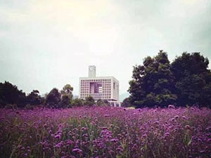
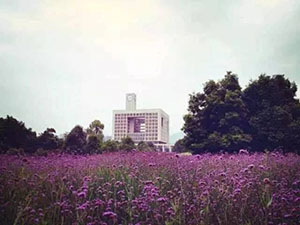
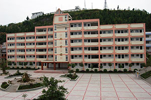
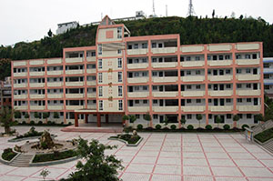

重庆师范大学：
重庆师范大学(英文简写CQNU)创办于1954年。是一所以文理为主，多学科协调发展的多科性高等学府，坐落在历史文化名城重庆，校园面积2804亩，包括大学城校区、沙坪坝校区和北碚校区。 学校是重庆市依法治校示范校、重庆市文明单位、重庆市德育工作先进集体、重庆市园林式单位、重庆市十佳市容整洁单位、重庆市森林校园。 学校拥有"国务院侨务办公室华文教育基地"、"教育部全国重点建设职教师资培训基地"两个国家级基地，重庆市普通中小学教师市级培训基地、重庆市幼儿教育教师市级研修培训基地、重庆市特殊教育教师市级培训基地、重庆市汉语国际推广培训基地、中德(重庆)职业教育示范基地、重庆市职教师资培训集团、重庆市管乐师资培训基地等多个市级基地。 截止到2013年，学校图书馆拥有纸质图书总量226万册，全日制本专科生34000余人，在校研究生2000余人。下设有17个学院，1个独立二级学院，47个全日制本科专业，14个硕士学位一级学科授权、86个专业硕士学位授权。
重庆师范大学(英文简写CQNU)创办于1954年。是一所以文理为主，多学科协调发展的多科性高等学府，坐落在历史文化名城重庆，校园面积2804亩，包括大学城校区、沙坪坝校区和北碚校区。 学校是重庆市依法治校示范校、重庆市文明单位、重庆市德育工作先进集体、重庆市园林式单位、重庆市十佳市容整洁单位、重庆市森林校园。 学校拥有"国务院侨务办公室华文教育基地"、"教育部全国重点建设职教师资培训基地"两个国家级基地，重庆市普通中小学教师市级培训基地、重庆市幼儿教育教师市级研修培训基地、重庆市特殊教育教师市级培训基地、重庆市汉语国际推广培训基地、中德(重庆)职业教育示范基地、重庆市职教师资培训集团、重庆市管乐师资培训基地等多个市级基地。 截止到2013年，学校图书馆拥有纸质图书总量226万册，全日制本专科生34000余人，在校研究生2000余人。下设有17个学院，1个独立二级学院，47个全日制本科专业，14个硕士学位一级学科授权、86个专业硕士学位授权。
凤鸣中学：
重庆市云阳县凤鸣中学是一所历史悠久的百年老校。清代嘉庆年间，当地文人士绅发起兴办学校，至道光丁未年建成凤鸣书院，民国三十四年(1945年)改为私立明道中学，1959年成立国办初级中 ，1982年升格为完全中学，1992年学校被原万县地区教委授予为首批"常规管理合格学校"，1997年，凤鸣中学迎接重庆市高完中办学基本条件检查验收一举达标，翻开了学校发展历史上的新的篇章。 重庆市云阳凤鸣中学校是云阳江南唯一的一所重点中学，地处凤鸣古镇，距县城十公里。1810年始办义学，1847年为凤鸣书院，1982年升格为高完中，2009年完成高中扩容工程，2010年以全市第一的评估结果成功晋升重庆市重点中学。学校历经两百年风雨沧桑，形成了"明道求真，勤奋创新"的书院精神和"为每一位学生的成功奠基"的办学理念。
重庆市云阳县凤鸣中学是一所历史悠久的百年老校。清代嘉庆年间，当地文人士绅发起兴办学校，至道光丁未年建成凤鸣书院，民国三十四年(1945年)改为私立明道中学，1959年成立国办初级中 ，1982年升格为完全中学，1992年学校被原万县地区教委授予为首批"常规管理合格学校"，1997年，凤鸣中学迎接重庆市高完中办学基本条件检查验收一举达标，翻开了学校发展历史上的新的篇章。 重庆市云阳凤鸣中学校是云阳江南唯一的一所重点中学，地处凤鸣古镇，距县城十公里。1810年始办义学，1847年为凤鸣书院，1982年升格为高完中，2009年完成高中扩容工程，2010年以全市第一的评估结果成功晋升重庆市重点中学。学校历经两百年风雨沧桑，形成了"明道求真，勤奋创新"的书院精神和"为每一位学生的成功奠基"的办学理念。